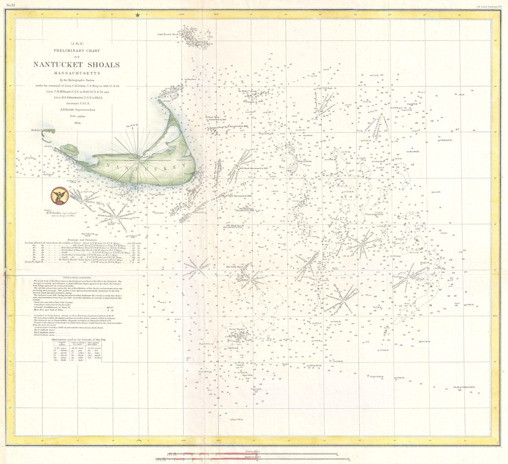

К содержанию
Waykeeper
Меню
База знаний
База знаний
открыто, без регистрации
Найти в базе знаний
/
Практики
открыто
Энциклопедия переходов
в работе
Атлас помогающих профессий
в работе
Ресурсы
в работе
С чем ты пришёл →
·
Вся база знаний →
«Переход»
«Новый сезон»
О проекте
О себе
Разговор
Написать в Telegram
Такой страницы нет
